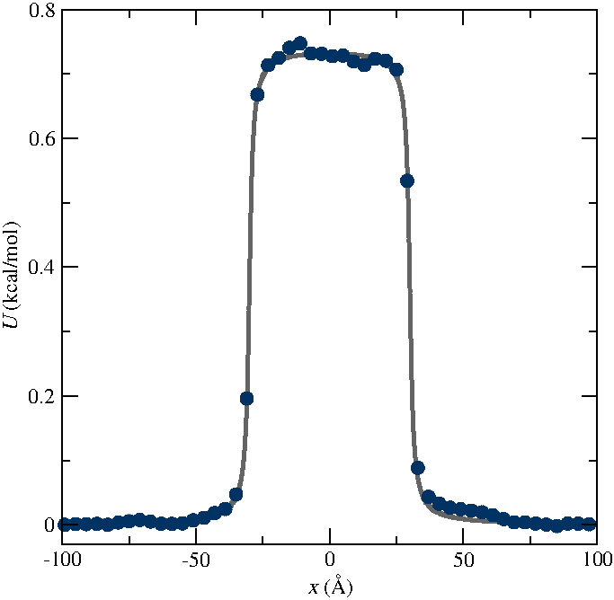

Free energy calculation
A simple free energy calculation using LAMMPS and WHAM
Objective: In this tutorial we are going to measure the free energy profile across a barrier potential using two methods: free sampling and umbrella sampling. For the sake of simplicity and in order to reduce computation time, the barrier potential will be imposed artificially to the atoms, but the procedure is valid for more complex systems.
Prerequisite: If you are new to LAMMPS, I recommend you to follow tutorial 01 first.
Method 1: Free sampling
One way to calculate the free energy profile is to extract the partition function from a classic (unbiased) molecular dynamics simulation, and then to estimate the Gibbs free energy using
\[\Delta G = -RT \ln(p),\]
where \(\Delta G\) is the free energy difference, \(R\) the gas constant, \(T\) the temperature, and \(p\) the partition function.
As an illustration, let us apply this method to an extremely simple configuration that consists in a few particles diffusing in a box in presence of a position-dependent repealing force that make the centre of the box a relatively unfavourable area to explore. Create an input script, and copy the following lines:
# Initialization
variable sigma equal 3.405 # Angstrom
variable epsilon equal 0.238 # Kcal/mol
variable U0 equal ${epsilon} # Kcal/mol
variable dlt equal 1.0 # Angstrom
variable x0 equal 30 # Angstrom
units real
atom_style atomic
pair_style lj/cut 10
boundary p p p
# System definition
region myreg block -100 100 -20 20 -20 20
create_box 1 myreg
create_atoms 1 random 6 341341 myreg
# Simulation settings
mass * 39.95
pair_coeff * * ${epsilon} ${sigma}
neigh_modify every 1 delay 4 check yes
If you followed tutorial 1, you must be familiar with these commands. The main novelty here is the use of the system of unit 'real', for which energy in kcal/mol, distance in Angstroms, time in femtosecond. I made this choice for practical reason, as the WHAM algorithm we are going to use in the second part of the tutorial automatically assumes the energy to be in kcal/mol. I choose Argon as the gas of interest, which explains the values of the Lennard-Jones parameter \(\sigma\) and \(\epsilon\), as well as the mass \(m = 39.95\) grams/mole. The variables \(U_0\), \(\delta\), and \(x_0\) are used to create the potential. I have chosen it to be of the form: \[U(x) / U_0 = \arctan \left( \dfrac{x+x_0}{\delta} \right)- \arctan \left( \dfrac{x-x_0}{\delta} \right),\] which looks like that:

From the derivative of the potential with respect to \(x\), we obtain the expression for the force that we are going to impose to the particles in the simulation, \[F(x)=U_0/((x-x_0)^2/\delta^2+1)/\delta-U_0/((x+x_0)^2/\delta^2+1)/\delta,\] which looks like that:

In order to impose \(F(x)\) to all of the atoms in the simulation, let us use the 'addforce' command, and define an 'atom' variable as follows:
# Run
variable F atom ${U0}/((x-${x0})^2/${dlt}^2+1)/${dlt}-${U0}/((x+${x0})^2/${dlt}^2+1)/${dlt}
fix myadf all addforce v_F 0.0 0.0
Finally, let us use the NVE command (constant number of atoms \(N\), constant volume \(V\), and constant energy \(E\)) with a Langevin thermostat. With these two commands, the simulation will be performed in the NVT ensemble (constant number of atoms \(N\), constant volume \(V\), and constant temperature \(T\)). After an equilibration step of 1000000 timestep, the density profile of the atoms along the \(x\) axis is recorded using an 'ave/chunk' command.
fix mynve all nve
fix mylgv all langevin 119.8 119.8 100 1530917
timestep 2.0
thermo 100000
run 1000000
reset_timestep 0
compute cc1 all chunk/atom bin/1d x 0.0 2.0
fix myac all ave/chunk 100 10000000 1000000000 cc1 density/number file density.dat
dump mydmp all atom 100000000 dump.lammpstrj
run 1000000000
We can extract the partition function from the density.dat file,

from which it is possible to calculate the free energy profile using the formula given at the top of this page (black disk) and compare it to the imposed potential (red line):

The results confirm that we indeed recover the imposed potential \(U(x)\). I did run the simulation five times with different seeds to improve the quality of the curve.
If we increase the value of \(U_0\), the number of times the particles will explore the central region during the simulation will decrease, making it difficult to obtain a good resolution for the free energy profile. This is why it is sometimes necessary to use slightly more evolved methods, such as umbrella sampling, to extract free energy profiles. This is what we are going to do next.
Method 2: Umbrella sampling
Umbrella sampling is a 'biased molecular dynamics' method, i.e a method in which the interactions of the system are modified in order to make the 'unfavourable states' more likely to be explored by the particle. Starting from the same system as previously, we are going to add a potential \(V\) to one of the particle, and force it to move along the axe \(x\). The chosen path is called the axe of reaction. The final simulation will be analysed using the weighted histogram analysis method (WHAM), which allows to remove the effect of the bias and eventually deduce the unbiased free energy profile. In a different folder, create a new script and copy the following lines:
# Initialization
variable sigma equal 3.405 # Angstrom
variable epsilon equal 0.238 # Kcal/mol
variable U0 equal ${epsilon} # Kcal/mol
variable dlt equal 1.0 # Angstrom
variable x0 equal 30 # Angstrom
variable k equal 0.0205 # Kcal/mol/Angstrom^2
units real
atom_style atomic
pair_style lj/cut 10
boundary p p p
# System definition
region myreg block -100 100 -20 20 -20 20
create_box 2 myreg
create_atoms 2 single 0 0 0
create_atoms 1 random 5 341341 myreg
# Simulation settings
mass * 39.948
pair_coeff * * ${epsilon} ${sigma}
neigh_modify every 1 delay 4 check yes
group topull type 2
# Run
variable F atom ${U0}/((x-${x0})^2/${dlt}^2+1)/${dlt}-${U0}/((x+${x0})^2/${dlt}^2+1)/${dlt}
fix pot all addforce v_F 0.0 0.0
fix mynve all nve
fix mylgv all langevin 119.8 119.8 100 1530917
timestep 2.0
thermo 100000
run 200000
reset_timestep 0
dump mydmp all atom 1000000 dump.lammpstrj
This code resembles the one of Method 1, except that we created one single particle of type 2. This particle is identical to the particles of type 1, and will be the only one to feel the biasing potential. Let us create a loop with 67 steps, aand move progressively the centre of the bias potential by increment of 0.3 nm.
variable a loop 67
label loop
variable xdes equal ${a}*3-102
variable xave equal xcm(topull,x)
fix mytth topull spring tether ${k} ${xdes} 0 0 0
run 200000
fix myat1 all ave/time 10 10 100 v_xave v_xdes file position.${a}.dat
run 50000000
unfix myat1
next a
jump input.lammps loop
The spring command serves to impose the additional harmonic potential with spring constant \(k\). The centre of the harmonic potential \(x_\text{des}\) goes from -99 to 99. For each value of \(x_\text{des}\), an equilibration step of 400 ps is performed, followed by a step of 100 ns during which the position along \(x\) of the particle is saved in data files (one data file per value of \(x_\text{des}\)).
In order to treat the data, we are going to use the WHAM algorithm. You can download and compile the version of Alan Grossfield. In order to apply the WHAM algorithm to our simulation, we first need to create a metadata file. This file simply contain the paths of the data file, the value of \(x_\text{des}\), and the values of \(k\). To generate the file more easily, you can run this script using Octave or Matlab (assuming that the wham algorithm is located in the same folder as the LAMMPS simulations)
file=fopen('metadata.dat','wt');
for a=1:67
X=['./position.',num2str(a),'.dat ',num2str(a*3-102),' 0.0205'];
fprintf(file,X);
fprintf(file,'\n');
end
The generated file named metadata.dat looks like that (alternatively you can download it here):
./position.1.dat -99 0.0205
./position.2.dat -96 0.0205
./position.3.dat -93 0.0205
./position.4.dat -90 0.0205
./position.5.dat -87 0.0205
(...)
./position.66.dat 96 0.0205
./position.67.dat 99 0.0205
Then, simply run the following command
./wham -100 100 160 1e-8 119.8 0 metadata.dat PMF.dat
where -100 and 100 are the boundaries, 160 the number of bins, 1e-8 the tolerance, and 119.8 the temperature. A file named PMF.dat has been created, and contains the free energy profile in Kcal/mol. We can compare the PMF we the imposed potential, and the agreement in again quite good:

Again, five independent simulations where run to improve the curve.